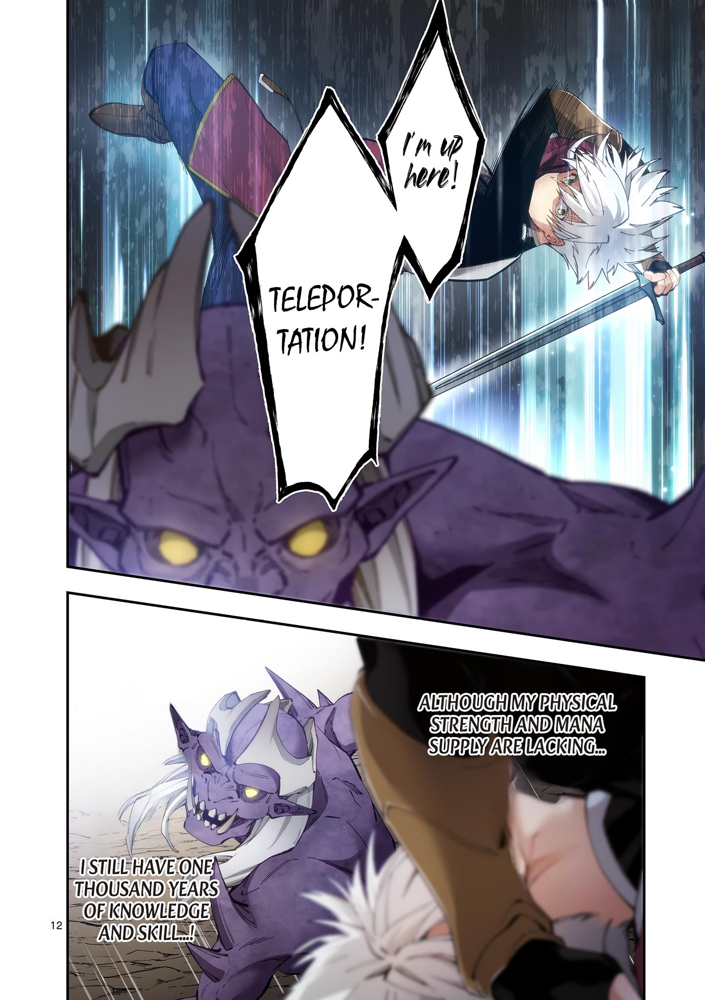
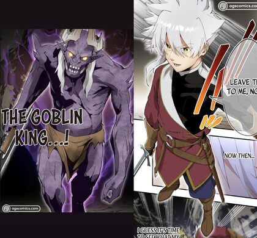
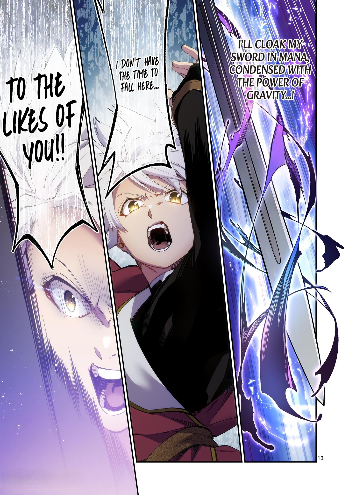
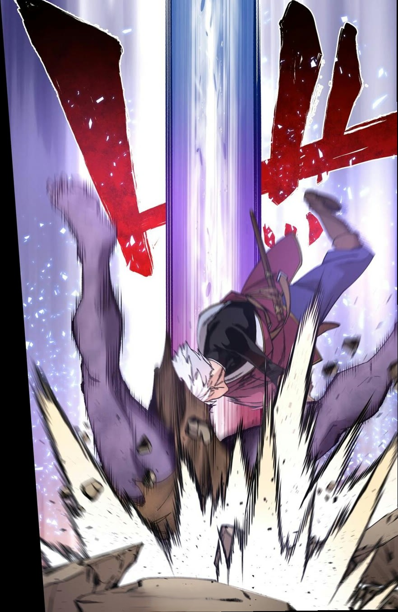
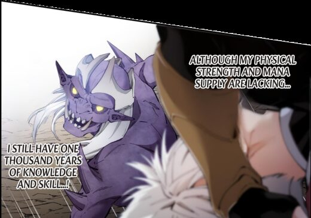
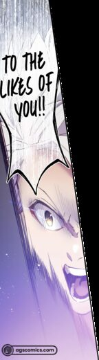
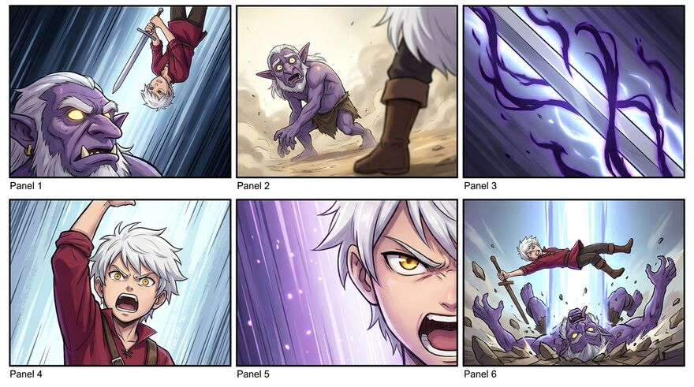
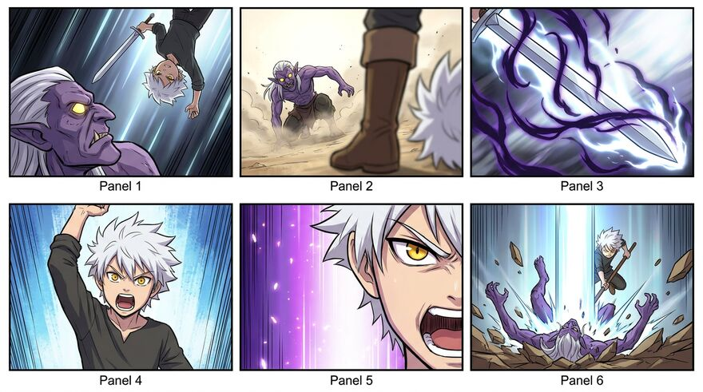
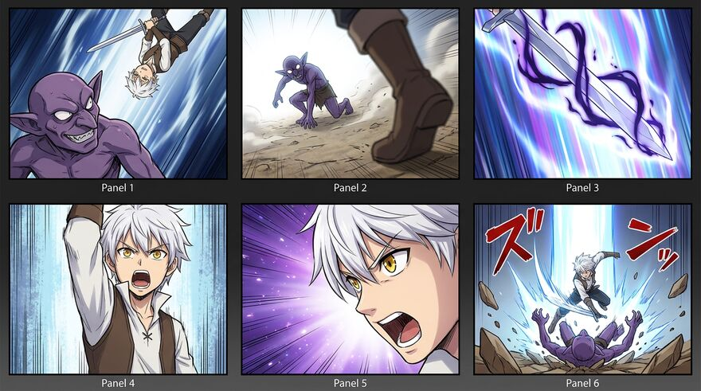

Manga2Animate
Manga2Animate
An Agentic Framework for Faithful Manga Animation with Script and Storyboard Planning
1National Yang Ming Chiao Tung University*Equal contribution
Abstract
Adapting existing manga into coherent animation that stays faithful to the source is a valuable yet challenging task. Existing methods either access the manga mainly through text, losing its characters and art style, or feed manga pages directly into video generation models, which misinterpret the manga's structure and produce incorrect storylines. In this paper, we propose Manga2Animate, a multi-agent framework that grounds every stage of generation in the source manga. We decompose the task into two intermediate representations, an animation script and a visual storyboard. Each representation is produced by a creator agent and reviewed against the source panels by a paired reviewer agent. We tailor representation-specific selection and dual-level feedback to progressively refine both before synthesizing the final animation. Extensive experiments and a user study demonstrate that Manga2Animate produces animations more faithful to the source manga and more consistent across shots than state-of-the-art approaches.
Method
Following real animation production, Manga2Animate first writes an animation script, then draws a visual storyboard, and only then generates the video. Each step is made by a creator agent and checked against the source manga panels by a reviewer agent. The walkthrough below uses the real intermediate outputs of one case; pick a stage to jump to it.

Manga pages and a character reference

Character description
A young adolescent male; short, extremely spiky bright white hair with a longer wispy tuft on his right side; striking golden-yellow eyes with thin black pupils; slim, athletic figure.

panels + text


Transcript
<1>Well,<1>I have time to here...<5>The 5% of you!!Creator
Clip 6: Script 2 wins 4 of 6 criteriaScript 2 correctly identifies the z-axis depth by stating Character 2 is 'in front of the beam', which is much more precise than saying he is 'across' it.
Creator


A vs B, 13 : 5 criteria for AStoryboard B fails to preserve the goblin's identity, particularly in panel 2 where the goblin looks like a frail old creature rather than a hulking monster.
Script Reviewer, clip 1The script should describe the specific orientation of the sword, noting that the blade points diagonally downwards across Character[2]'s body.
Storyboard ReviewerThe goblin must have long white hair and a prominent beige bone structure protruding from its forehead.
Creator

Creator
Reviewer
Clip-wise selection example
A candidate script can describe one panel precisely and misread the next. This example shows how the Script Reviewer judges one clip across three candidates and assembles the best script from the winning parts.

Script 1, clip 6
Extreme close-up shot. The creature's face occupies the lower left side of the screen, facing slightly screen right with its eyes tightly shut. On the right side of the screen, the elf's head leans into the frame, her face very close to the creature, looking down at it with a soft expression. The top crystal portion of her wooden staff is visible resting near her shoulder on the right edge.
WrongScript 2, clip 6
Extreme close-up shot. On the left side of the screen, the creature's face is visible in partial profile, facing left with tightly squeezed shut eyes. On the right side, the ornate head of the elf's staff (featuring a dark crescent shape and a diamond-shaped crystal) gently bonks the top of the creature's head from above.
CorrectScript 3, clip 6
A composite shot split horizontally. In the upper half, the elf is positioned on the right, kneeling and gently petting the top of the creature's head with her right hand while smiling. The creature is on the left, looking flustered with its mouth open. In the lower half, an extreme close-up shows the creature's face on the left with closed eyes, positioned next to the pointed base of the elf's staff on the right.
WrongScript 2, clip 6 becomes clip 6 of the best script
Comparison with Baselines
All script-based baselines receive the same refined script as Manga2Animate, so differences come from how each method turns it into video.
User Study and Ablations
User study
37 participants saw eight storyboard cases and eight video cases next to the input manga, with method names hidden and order randomized, and picked the best result for each criterion.
Ablations
Video metrics on the evaluation set (higher is better). The full model is the last row of each table; red marks the best value and an underline the second best.
Citation
@misc{manga2animate2026,
title={{Manga2Animate}: An Agentic Framework for Faithful Manga Animation with Script and Storyboard Planning},
author={Sheng-Wei Zhang and Hsi-An Chen and Yan-Ting Liou and Chih-Hsuan Chen and Shih-Chen Tseng and Yu-Lun Liu},
year={2026}
}